All figures are generated from synthetic data and are for illustration only.
Oncology
onc <- simulate_oncology(n_per_arm = 60)
plot_km(
onc$adsl,
time = "os_months",
event = "os_event",
arm = "arm",
title = "Overall Survival"
)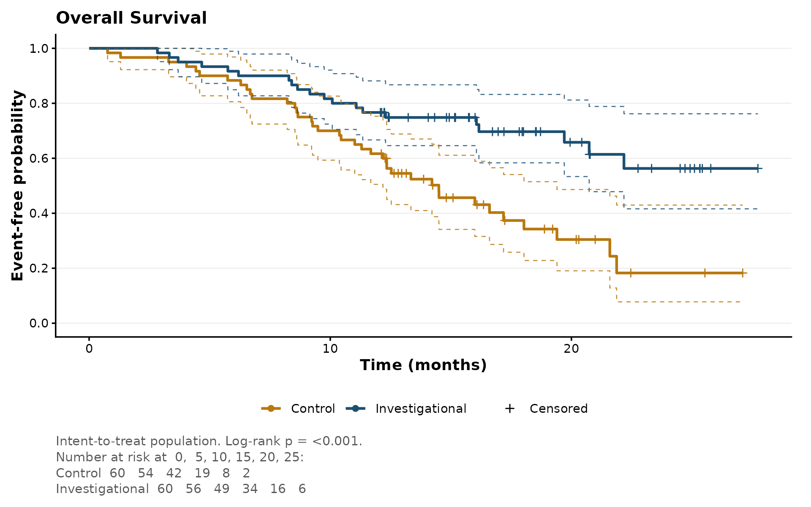
plot_waterfall(onc$adsl)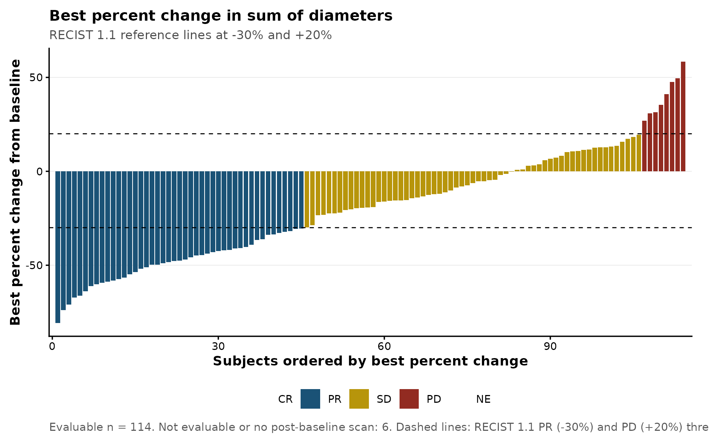
plot_swimmer(onc$adsl, max_n = 20)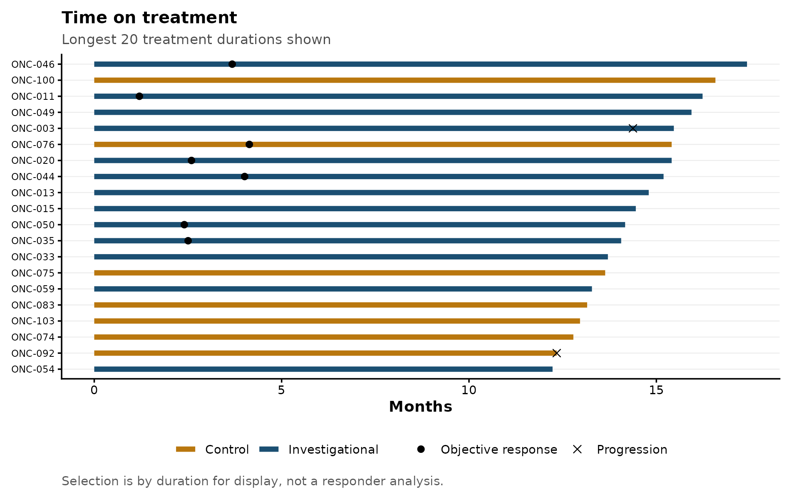
plot_spider(onc$adtr)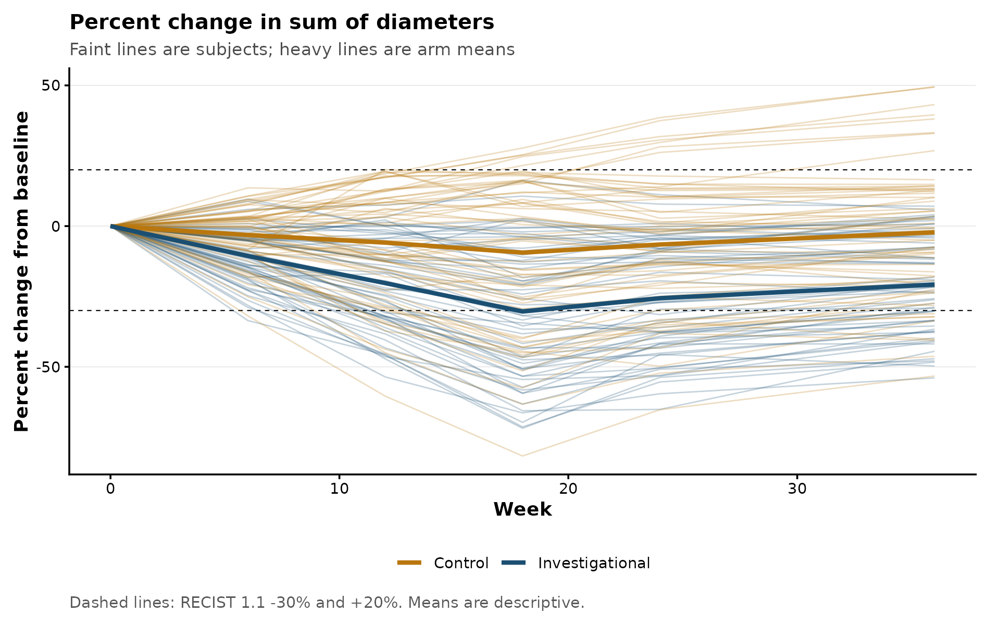
Safety
saf <- simulate_safety(n_per_arm = 40)
plot_ae(saf$adae, denom = saf$adsl, reference = "Placebo")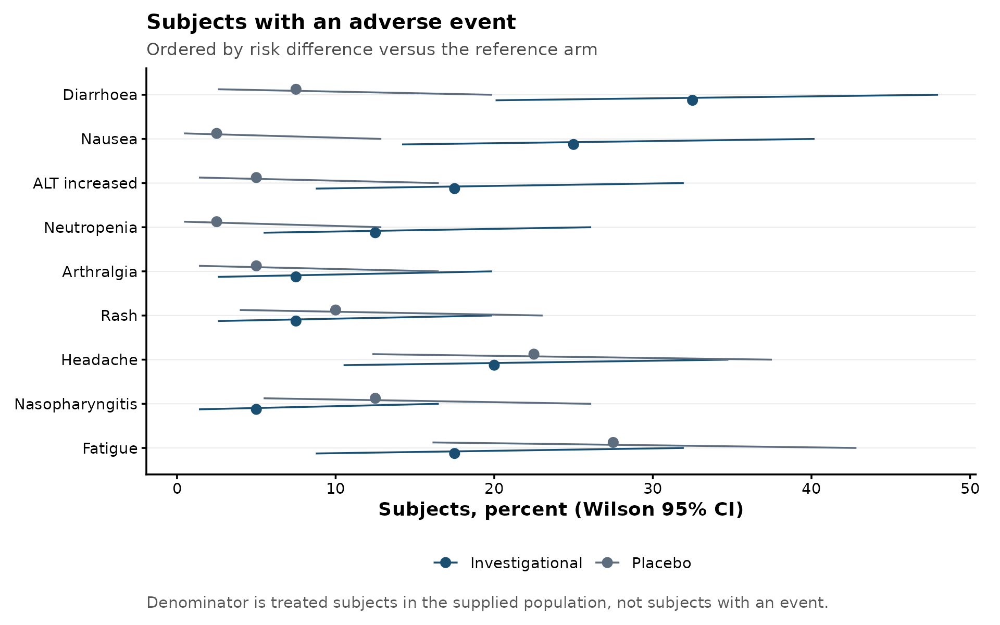
plot_edish(saf$adlb)
#> Warning: Use of `lab[[id]]` is discouraged.
#> ℹ Use `.data[[id]]` instead.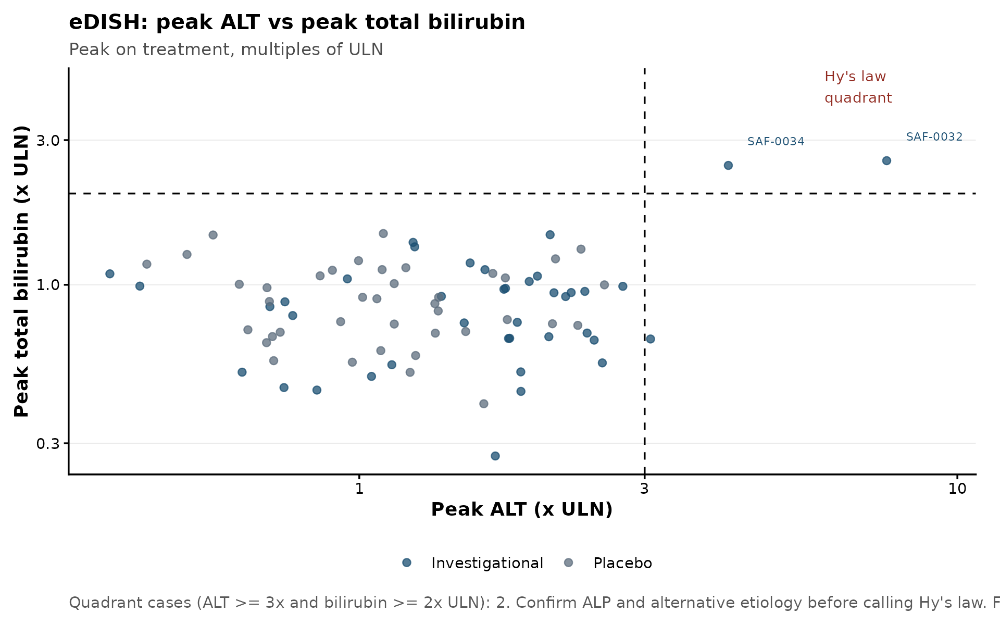
plot_exposure(saf$adsl)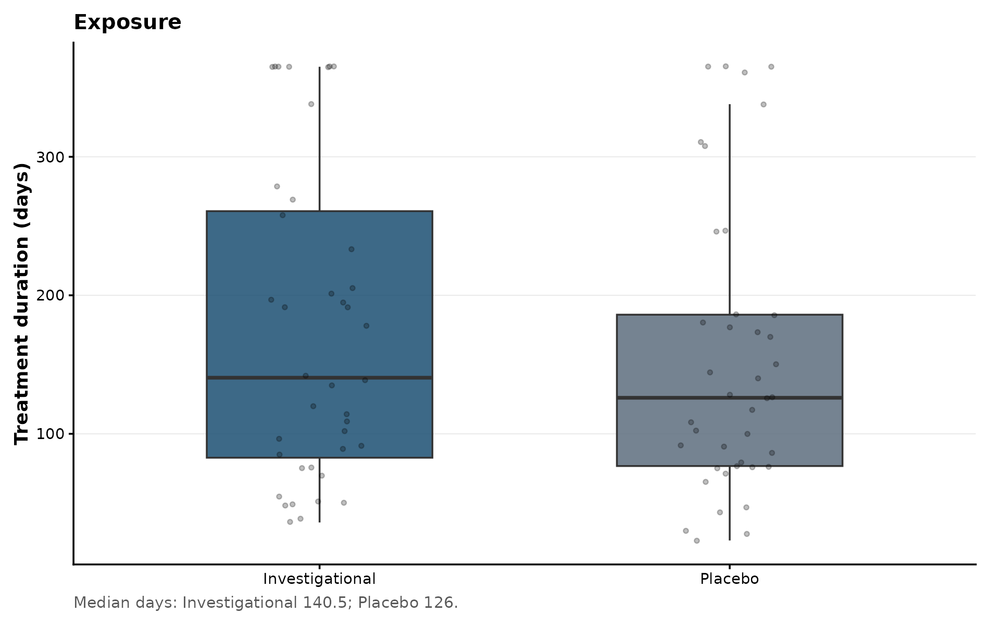
Cardiovascular
cv <- simulate_cardiovascular(n_per_arm = 50)
plot_km(
cv$adsl,
time = "mace_months",
event = "mace_event",
arm = "arm",
title = "Time to First MACE"
)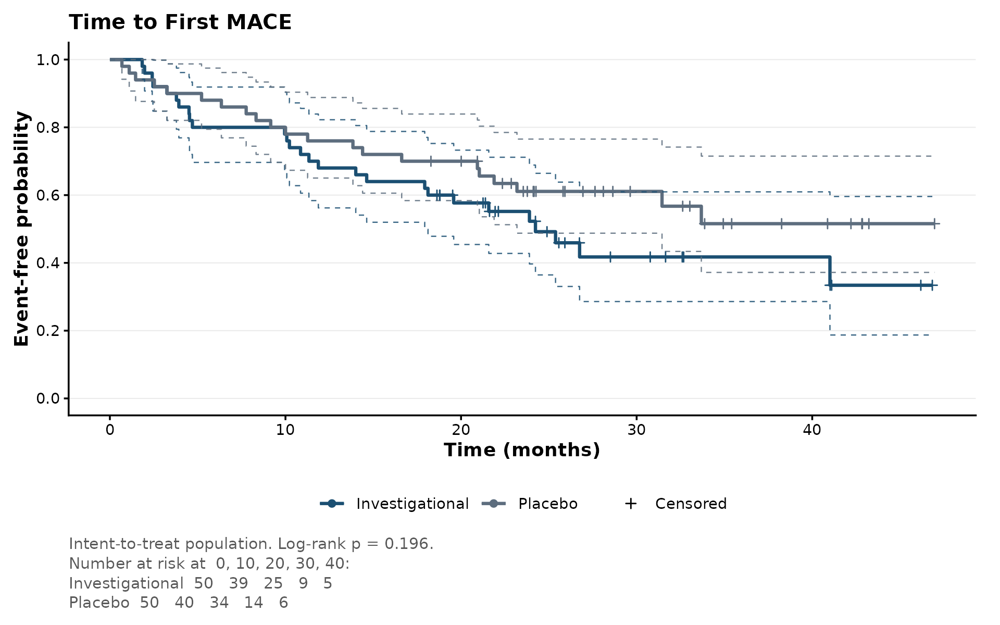
plot_change(
cv$advs,
title = "Mean Change in SBP",
ylab = "Mean change in SBP (mmHg)"
)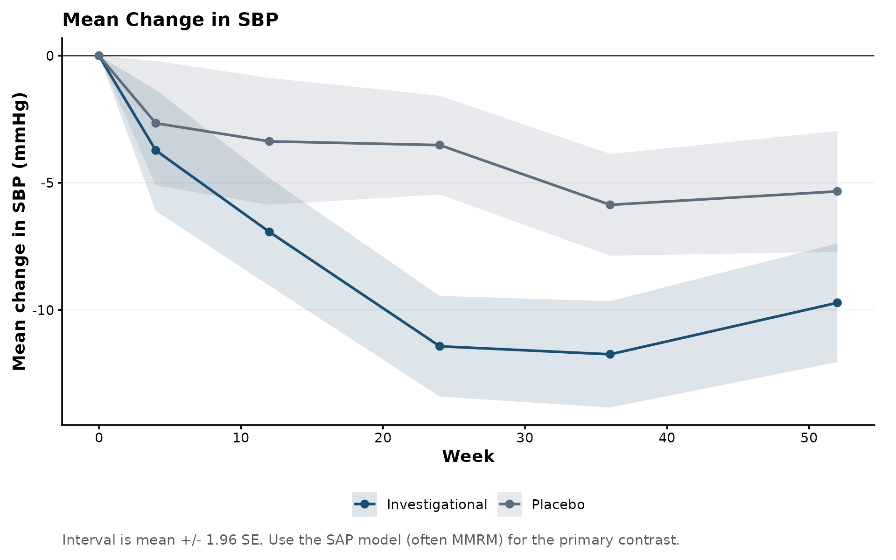
Endocrinology
endo <- simulate_endocrinology(n_per_arm = 40)
plot_change(
endo$adlb,
title = "Mean Change in HbA1c",
ylab = "Mean change in HbA1c (%)"
)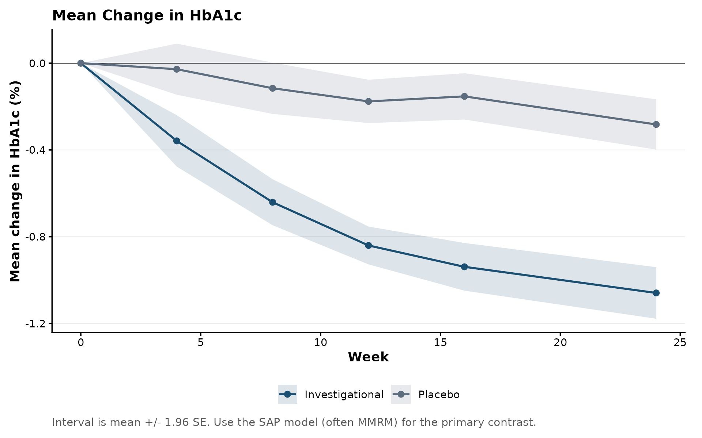
Immunology
imm <- simulate_immunology(n_per_arm = 40)
# Note: immunology returns adeff (not adlb)
plot_change(
imm$adeff,
title = "Mean Change in DAS28",
ylab = "Mean change in DAS28"
)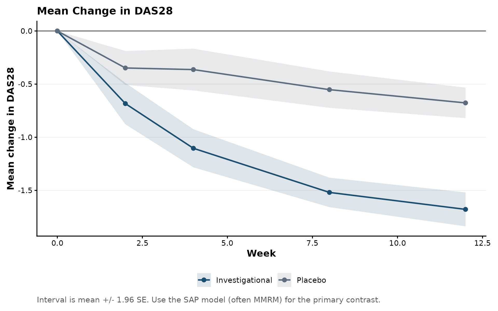
Infectious Disease
inf <- simulate_infectious(n_per_arm = 40)
# Note: infectious disease uses "day" instead of "week"
plot_change(
inf$adlb,
visit = "day",
title = "Mean Change in log10 Viral Load",
xlab = "Day",
ylab = "Mean change in log10 viral load"
)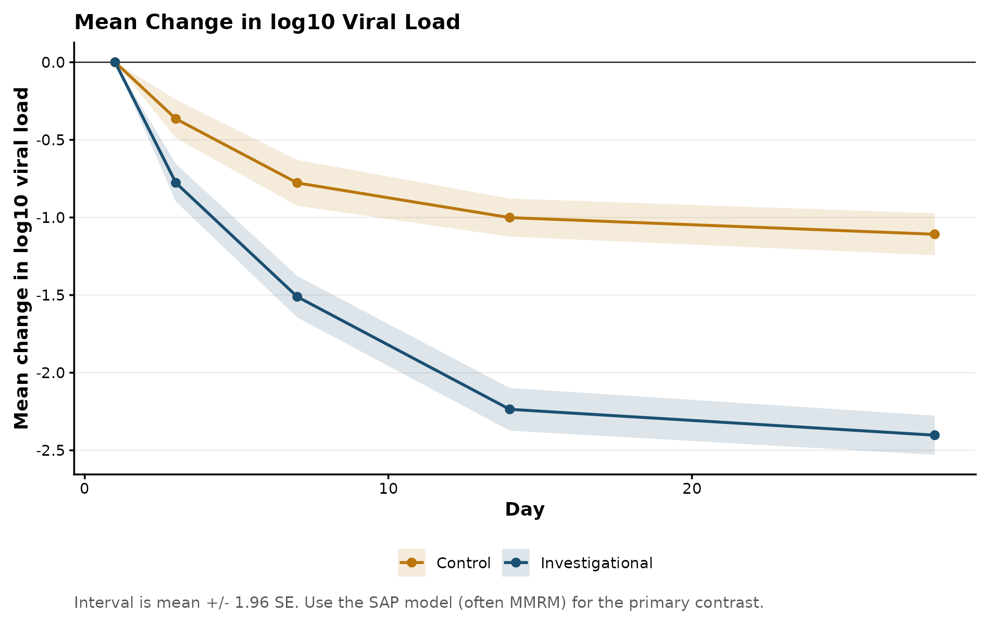
plot_km(
inf$adsl,
time = "clear_days",
event = "clear_event",
arm = "arm",
title = "Time to Virologic Clearance",
xlab = "Days"
)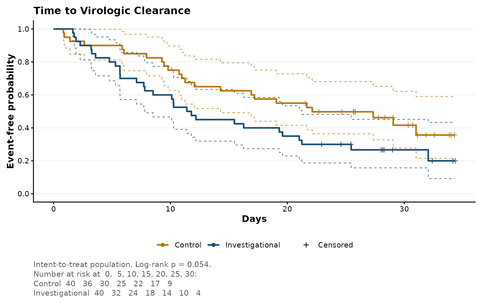
Neuroscience
neuro <- simulate_neuroscience(n_per_arm = 40)
# Note: neuroscience returns adeff (not adlb)
plot_change(
neuro$adeff,
title = "Mean Change in MADRS",
ylab = "Mean change in MADRS"
)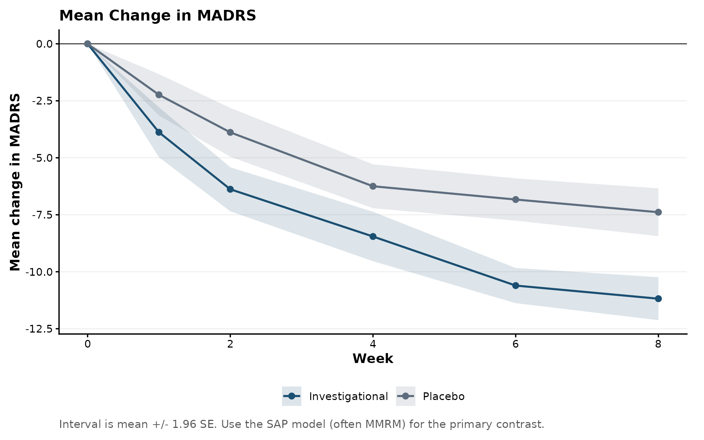